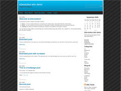

Skin Name: Bluer b2evlution skin
Description: Bluer is a simple and stylish, fixed-width b2evolution skin designed by Real Estate Press
for b2evo version: 2.x
design by: Real Estate Press
Tags: black, gray, white, blue, 2-columns, right sidebar, widget ready, fluid width, seo friendly